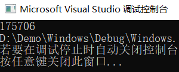
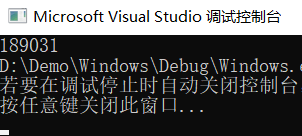
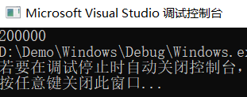
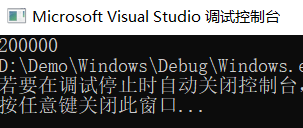
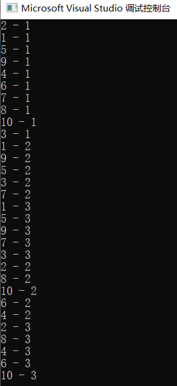
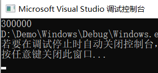
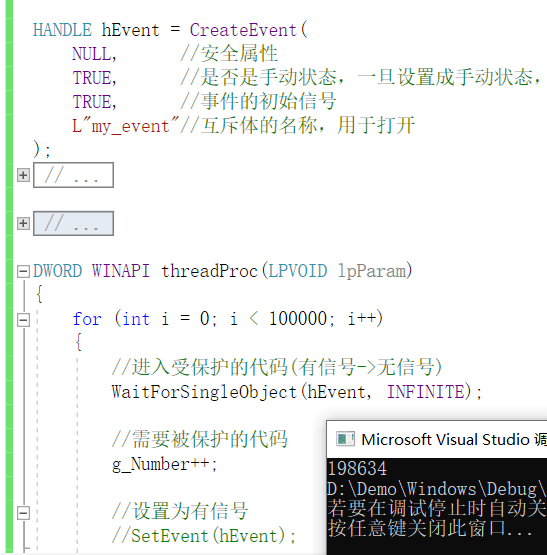
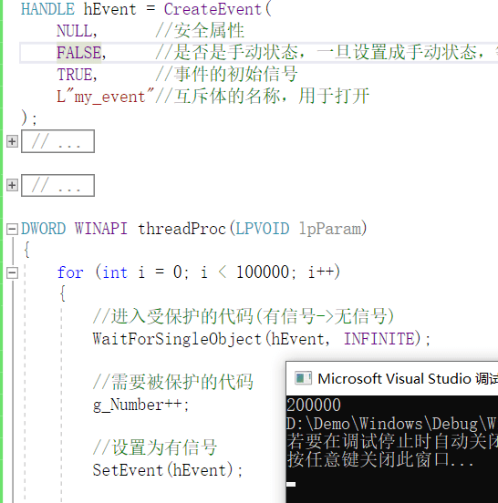

内核对象
windows操作系统是以C语言和汇编语言编写的，但是他是一个面向对象的操作系统，在系统中充满了对象的概念。
什么是内核对象？
内核对象的本质是一个个内核层的结构体变量。但是windows系统不希望程序员能够直接定义，访问，修改这些结构体变量，他们都被保护了起来，所以在使用这些对象的时候，都有一个共同点，就是都要先得到他们的句柄，再通过调用相应的API去操作这些对象。
内核对象的公共特点
所有的内核对象都遵循统一的使用模式
第一步：创建对象：
创建一个内核对象，一般都是使用CreateXXX的方式，比如：
| CreateProcess | 创建进程 | CreateThread | 创建线程 |
|---|---|---|---|
| CreateFile | 创建文件 | CreateFileMapping | 创建文件映射 |
| CreateEvent | 创建事件对象 | CreateSemaphore | 创建信号量 |
第二步：打开对象，得到句柄 (可与第一步合并在一起，表示创建的时候就打开)
第三步：通过API访问对象
第四步：关闭句柄
第五部：句柄全部关完，对象自动销毁
所有的内核对象都属于操作系统内核，可以在不同的进程间访问到，俗称：内核对象是跨进程的。很多时候，我们都需要再不同的进程中访问同一个内核对象，比如进程间的同步，进程间共享数据等。
每一个内核对象都有一个引用计数，当有一个进程创建或者打开了此内核对象，那么内核对象的引用计数自增。进程终止，或者关闭了句柄，引用计数自减1(CloseHandle)，当引用计数自减为0，那么内核对象会自动销毁(CloseHandle)。
对象的安全属性(SECURITY_ATTRIBUTE)，每一个内核对象在创建的时候，都是有一个安全属性，这个安全属性标识了，怎么区使用这个对象，比如对象是可读可写，对象所具有的权限等等。一旦内核对象以某种属性创建，之后便只能再规定的权限内工作，假如传NULL的话，就会指定一个默认的属性。
进程
进程是windows操作系统中一个重要的概念，很多时候，我们喜欢把一个exe文件想象成一个进程的全部，认为进程不过是.exe在内存中的样子，其实进程所涵盖的东西远远多于这个exe文件。一个进程至少包含了：
- 一个虚拟的内存空间(4GB)
- 在内存空间中，有映射进来的.exe文件，所有和程序运行相关的.dll文件，映射在内存中的exe与dll我们称之为模块
- 进程内核对象，操作系统使用此对象来管理进程。内核对象中至少包含了，进程的内核对象句柄表，进程的权限，进程的全局唯一ID值。
- 至少有一个运行着的线程。
线程
线程是执行代码的一个单元，从CPU的角度来说，所有的线程一视同仁，不会因为你是某一个进程的线程而另眼相看，根据线程的优先级选择执行哪一个线程，分配其时间片，当此线程的时间片用完之后，再选择下一个线程执行
一般情况下，线程所执行的代码是属于某一进程的，同一个进程的所有线程共享进程内的所有资源：包括虚拟内存空间，内核对象句柄表等
还有一种线程叫做内核线程，其执行的代码全部是再内核空间。
我们通常把第一个执行的线程叫做主线程，主线程一旦退出整个程序就会退出，线程最少由一个线程内核对象，和一个线程的栈帧组成。
如何创建一个线程
1 | // Windows.cpp : 此文件包含 "main" 函数。程序执行将在此处开始并结束。 |
多线程问题
1 | // Windows.cpp : 此文件包含 "main" 函数。程序执行将在此处开始并结束。 |


可以看出，结果的值是不确定的。但是永远达不到200000(循环必须要足够大)
反汇编窗口可以看到
1 | g_Number++; |
由于g_Number++;不是院子操作，所以可能出现如下问题：
1 | [1]: mov eax,dword ptr [g_Number] // g_Number(0) |
对于两个线程同时做自增而言，有可能线程1刚执行完add eax,1 还未来得及将自增后的结果写入，线程2开始执行，并完成了很多自增操作，当线程1再此执行的时候，将eax的值写回到全局变量中，然后发现，刚才线程2所做的都是无用功。因为线程的调度是不可控的。
原子操作
所谓的原子操作就是指一个线程对于某一个资源所做操作的时候能够确保没有其他的线程对此资源进行访问
本质就是将C语言的代码解释成了单条的汇编指令
缺陷：只支持堆最长8字节的整数类型执行算数运算
应用场景：在进程inlinehook的时候可以解决线程安全
函数：Interlockxxx
| InterlockedIncrement | 给一个整形变量自增1 |
|---|---|
| InterlockedExchangeAdd | 为一个整形变量以原子方式加上一个数 |
| InterlockedExchange | 将一个32位数以原子方式赋值给另外一个数 |
| InterlockedExchange64 | 将一个64位数以原子方式赋值给另外一个数 |
| InterlockedCompareExchange | 如果两个数相等，就将另外一个数赋值，不相等则无效果 |
1 | // Windows.cpp : 此文件包含 "main" 函数。程序执行将在此处开始并结束。 |
运行结果

临界区(关键段)
原子操作的弱点：只能使得一个整形数据做简单算数运算的时候是原子的
但是大部分时候我们其实是希望保护一段代码，使得这一段代码是原子操作，而并非是某一个变量的操作，使用临界区恰好能够解决这个问题
临界区的概念：临界区使用EnterCriticalSection和LeaveCriticalSection形成一个保护区来保护代码，是一个结构体，通过结构体内的一些字段判断执行当前代码的线程是否是对应的线程，如果不是，就阻塞。拥有(线程拥有者)的概念。
优点：可以执行一段代码，执行速度快
缺点：拥有该临界区的线程一旦崩溃，就会产生死锁
在使用临界区前，需要调用InitializeCriticalSection初始化一个临界区，使用完后需要调用DeleteCriticalSection销毁临界区
1 | // Windows.cpp : 此文件包含 "main" 函数。程序执行将在此处开始并结束。 |
运行结果：

等待函数
等待函数可以等待一切可等待的内核对象，可等待的内核对象有两个状态，一个叫做激发态，另一个叫做非激发态
等待函数的作用：使一个线程进入到等待状态，直到制定的内核对象被触发为止
使用的函数：
单个：WaitForSingleObject(内核对象句柄，等待时长)
一组：WaitForMultipleObjects()
等待函数的返回值
| WAIT_ABANDONED | 互斥体的情况下有用 |
|---|---|
| WAIT_OBJECT_0 | 等到了内核对象被设置为激发态 |
| WAIT_TIMEOUT | 超时了 |
| WAIT_FAILED | 失败了 |
等待函数的副作用：
- 改变被等待内核对象的信号状态(有信号->无信号)
- 基于这个原理才会有后面的内核对象同步
1 | // Windows.cpp : 此文件包含 "main" 函数。程序执行将在此处开始并结束。 |
运行结果：

互斥体
很多时候，在一个进程中，我们使用临界区能够解决很多的问题了，但是临界区也有它的缺点：
- 临界区是在一个进程内有效的，无法在多线程的环境下进行同步
- 一旦进入临进区的线程崩溃了，导致临界区无法释放，那么其他线程也就无法再进入临界区，全部会被卡住
所以使用互斥体来解决这些问题
互斥体是一个内核对象
优点：拥有临界区的特性(线程拥有者)，但是不会产生死锁，且跨进程
缺点：慢
应用场景：用于预防应用双开
相关函数：
- 保护：WaitforSingleObject
- 离开：RealseMutex
1 | // Windows.cpp : 此文件包含 "main" 函数。程序执行将在此处开始并结束。 |
运行结果：

对于互斥体，有三个内容非常重要：
- 他有两个状态，激发态和非激发态
- 它有一个概念，叫做线程拥有权，与临界区类似
- 等待函数等待互斥体的副作用，将互斥体的拥有者设置为本线程，将互斥体的状态设置为非激发态
于是一般情况下出现了下面的情况：
- 当互斥体没有被任何一个线程拥有时，它处于激发态，也可以说锁是打开的
- 当一个线程A调用了
WaitforSingleObject时，WaitforSingleObject函数会立刻返回，并将互斥体设置为非激发态，互斥体被锁住，此线程获得拥有权 - 后面的时刻，任何其他调用
WaitforSingleObject函数的线程无法获得拥有权，必须一直等待互斥体，他们全都被阻塞 - 当线程A调用
RealseMutex函数，将互斥体释放，即为互斥体解锁，此时互斥体不被任何一个线程拥有，并被设置为激发态，会在等待它的线程中随机选择一个重复最开始的情况
互斥体同一时刻只能被一个线程拥有，在WaitForxxx与ReleaseMutex函数之间的代码被保护了起来，就像在临界区内一样。所不同的是，互斥体是一个内核对象，使得其能够在多进程间进行同步
相比于临界区的另外一个优势是，当锁住互斥体的线程意外崩溃，没有调用ReleaseMutex，互斥体会自动被设置为不被任何线程拥有，并处于激发态
事件
事件的使用给予了成员很大的权限，可以设置等待函数对于此事件对象有没有副作用。也可以手动设置事件对象为激发态还是非激发态
互斥：通常是多个线程访问同一个资源
同步：通常是需要多个线程按照指定顺序执行
事件对象也是一个内核对象
特点：可以设置为手动操作，也可以设置为自动操作
缺点：慢
需要用到的函数：
| CreateEventW | 创建一个事件对象 |
|---|---|
| OpenEventA | 打开一个事件对象 |
| SetEvent | 将事件对象设置为激发态 |
| ResetEvent | 将事件对象设置为非激发态，注意：不是重新设置为激发态的意思 |
| PulseEvent | 将事件对象设置为激发态 |
| CloseHandle | 关闭事件对象，将事件对象引用计数减1，减为0时，事件销毁，这个是内核对象的通用关闭方式 |
1 | // Windows.cpp : 此文件包含 "main" 函数。程序执行将在此处开始并结束。 |
1 | 当CreateEvent的第二个参数为TRUE(手动)，并且没有SetEvent(hEvent)的结果 |

1 | 当CreateEvent的第二个参数为FALSE(自动)，并且设置SetEvent(hEvent)的结果 |

信号量
信号量是一个内核对象
特点：可以进行多次的上锁操作
缺点：慢
应用场景：控制同时执行的线程的最大个数 ， 信号量通常不会单独使用，一般要结合互斥体或事件
| CreateSemaphore | 创建信号量 |
|---|---|
| OpenSemaphore | 打开信号量 |
| ReleaseSemaphore | 释放信号量 |
| CloseHandle | 关闭信号量 |
1 | // Windows.cpp : 此文件包含 "main" 函数。程序执行将在此处开始并结束。 |
对于信号量，有这么几方面是需要掌控的
信号量有一个当前信号数，只要当前信号书部位0，信号量就处于激发态
当有线程调用了WaitForSingleObject函数，其副作用是将当前信号数减1，即为信号量上了一把锁
此时加入信号数量不为0，那么再有线程调用WaitForSingleObject函数，又会将当前信号数减1，从而再讲信号量上一把锁
调用ReleaseSemaphore会将当前信号数加1，即打开一把锁
再当前信号数为0的时候，即信号量被完全锁住，再有线程调用WaitForSingleObject时，就会被阻塞，直到有线程释放信号量，打开了一把锁
信号量有一个最大信号数，释放信号量不会使得当前信号数超过最大信号数，即在信号量上运行的线程的个数有一个数量限制
信号量不同于互斥体的是，互斥体的等待与释放应该在用一个线程内成对出现，信号量的释放动作，可以在任何一个线程中，从而使得其他线程得以执行
总结
原子操作：简单的同步机制，只能队4个字节的数据进行算数运算
临界区：队一段代码实现保护操作，只能在一个进程中的不同线程使用。无法检测由于线程崩溃造成的临界区无法释放的问题。有拥有者线程的概念，对于拥有者，可以多次进入临界区，相应的也需要多次离开临界区，否则容易造成死锁(其他线程永远等待)
互斥体：是一个内核对象，可以在不同的进程的线程中实现对于一段代码的保护。能够检测由于线程崩溃造成的互斥体释放问题。有拥有者线程的概念，对于拥有者，可以多次给互斥体上锁(即多次等待)，相应的也需要多次解锁(即释放互斥体)，否则容易造成死锁(其他线程也会永远等待)，并且，它只能被拥有者线程释放，故而多线程间的不同回调函数的同步使用互斥体可能会出现问题。
信号量：是一个内核对象，没有拥有者的概念，可以控制多个线程同时访问被保护的代码。并且给线程数量设置一个上限(即被锁定的次数)
事件：是一个内核对象，没有拥有者的概念，自主性非常高，特性完全可以由程序员设定，可以封装自己的同步机制。
原子操作：
| InterlockedIncrement | 自增 | InterlockedIncrement(&g_Number) |
|---|---|---|
| InterlockedDecrement | 自减 | InterlockedDecrement(&g_Number) |
| InterlockedExchangeAdd | 加法/减法 | InterlockedExchangeAdd(&g_Number,256L) |
| InterlockedExchange | 赋值 | InterlockedExchange(&g_Number,256L) |
临界区：
| InitializeCriticalSection | 初始化 |
|---|---|
| DeleteCriticalSection | 销毁 |
| EnterCriticalSection | 进入临界区 |
| LeaveCriticalSection | 离开临界区 |
互斥体：
| CreateMutex | 创建互斥体 | 可以给互斥体起名字 |
|---|---|---|
| OpenMutex | 打开互斥体，得到句柄 | 根据名字才能打开互斥体 |
| ReleaseMutex | 释放互斥体 | 会使得互斥对象处于激发态 |
| CloseHandle | 关闭句柄 | 使用完后关闭 |
| WaitForSingleObject | 等待互斥体处于激发态 | 等到激发态后，会使得互斥体再此处于非激发态 |
事件：
| CreateEvent | 创建事件 | 可以给事件起名字；可以设置两种模式：手工 自动 |
|---|---|---|
| OpenEvent | 打开事件，得到句柄 | 根据名字才能打开事件 |
| SetEvent | 释放事件 | 会使得事件处于激发态 |
| ResetEvent | 重置事件 | 会使得事件处于非激发态，对手工模式的事件有效 |
| WaitForSingleObject | 等待事件处于激发态 | 等到激发态后，对于自动模式的事件会使其再此处于非激发态 |
信号量：
| CreateSemaphore | 创建信号量 | 可以给信号量起名字；可以指定最大信号数和当前信号数 |
|---|---|---|
| OpenSemaphore | 打开信号量 | 根据名字才能打开信号量 |
| ReleaseSemaphore | 释放信号量 | 会增加信号量的信号数，但是不会超过最大信号数 |
| WaitForSingleObject | 等待信号量处于激发态 | 若处于激发态，则会减少一个信号数，信号数为零，则将其置为非激发态 |